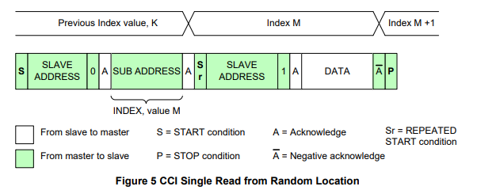

MIPI-CCI
本文最后更新于：2024年4月25日 上午
- 参考
- CSI-2 2.0 Spec
1.CCI（Camera Control Interface）
1.1 CCI 主从机定义
- I2C支持多主机多从机传输，但CCI只支持一个主机的传输。
- CCI将CSI的Transmitter配置为Slave，而将Reciever配置为Master。
1.2 CCI Message Types
- CCI
传输信息类型包括：Start信号、ACK信号、Stop信号以及从机地址、从机内部寄存器子地址。
CCI的从机地址位为7bit，8bit DATA传输，以及8bit/16bit INDEX传输。

1.3 读写操作
CCI支持四种读操作和两种写操作，下面展开介绍。
（1）随机位置单次读
如下图所示，主机先会发起一个虚拟的写操作，指定好从机地址以及INDEX值后，再发起读操作。至于为什么需要Dummy Write可以看这篇博客。
和I2C一样，更改数据传输方向需要再次发起开始信号Sr，并且主机需要再次给从机的地址，但不需要给INDEX值。
完成一次数据读操作之后，将SDA信号拉高表示主机不应答，结束传输。

（2）随机位置连续读

（3）当前位置单次读
使用的是Previous_index + 1，不需要Dummy Write。

（4）当前位置连续读

（5）随机位置单次写

（6）随机位置连续写
下图中，我认为最后一个Data对应的Index值应为M+L-1。
1.4 CCI Multi-Byte Registers
- CSI-2 协议支持以下寄存器宽度
- 8-bits - 常用寄存器宽度
- 16bits - parameters like line-length, frame-length and exposure values（曝光值）
- 32bits - 用于高精度的寄存器宽度
- 64bits - for needs of future sensors
- 对于寄存器位宽大于8bits，CCI协议传输情况如下图所示。
- 最高数据有效字节(MS Data Byte)对应着Register Index最小值，最低数据有效字节(LS Data Byte)对应着Register Index最大值。
- 寄存器第一个字节地址可能与寄存器大小并为对齐，如下第一张图，这是被允许的，但读出数据并不一定正确。
- 寄存器是否需要对齐取决于系统对数据处理效率优化及数据传输带宽优化的权衡。
- 不允许对多字节寄存器进行部分字节访问，需要按照字节MS-LS之间的顺序访问，如下第二张图。
- 读/写指令格式与前面介绍的CCI读写相似，区别在于对读/写的数据拼接处理。
Multi-Byte Read
下面内容并无明确规范要求，可以根据设计更改。
为保证读取数据为同一Multi-Byte寄存器中的值，需要插入缓冲区，之后再从缓冲区加载字节序列输出到SDA线上。
如下图所示，在更新到新的Multi-Byte 寄存器(0x01020304)后，缓冲区被刷新。
对于更大位宽的寄存器，若仍采用上述缓冲更新策略，可能会出现数据被覆盖的问题，需更改缓冲区更新策略，如下图所示。
- 当开始读数据MS Byte时，将Multi-Byte 寄存器中的值全部加载到缓冲区，直到主机发出Start/Stop信号之后再重置缓冲区。
- 这样可以保证数据读取正确，不会在读取过程中数据被覆盖。
Multi-Byte Write
如下图所示，为保证Multi-Byte 寄存器的数据被同时写入，仍需要增加缓冲区。
在寄存器LS Data 字节被写入后，完整的多字节值会被传输到对应地址的寄存器中。
1.5 CCI Timing
CCI 需要考虑的时序约束变量如下图所示。
t_R/t_F: Rise time / Fall time of both SDA and SCL signalst_BUF: Bus free time between a STOP and START conditiont_HD,STA: 检测到SDA从高到低变化(START)时，SCL应需要额外保持高电平这些时间，之后开始产生时钟(SCL)脉冲。t_SU,STA: 在Repeated-START信号前，SCL信号应保持为高电平的建立时间。t_LOW/t_HIGH: SCL 保持低电平和高电平的周期时间。t_SU,DAT/t_HD,DAT: 数据在时钟(SCL)高电平到来之前应保持稳定的建立时间/数据在SCL变为低电平之前应保持稳定的保持时间。- CCI与I2C一样，在SCL为高电平时，接收器从SDA上采样1bit数据，SDA需要保持稳定。关于I2C相关内容可以看这篇博客。
t_SU,STO: 在SDA从低电平拉高(产生STOP信号），SCL需要保持为高电平的时间。
总结：建立保持时间与常见的同步时序电路中上升沿采样的一致，关键需要清楚SDA及SCL的
开始、停止、采样条件。